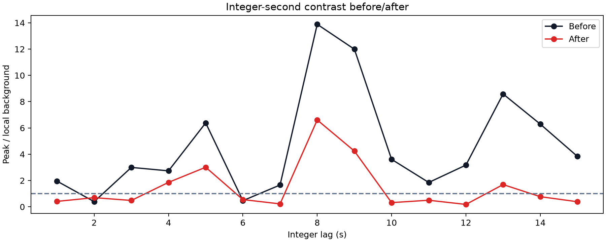
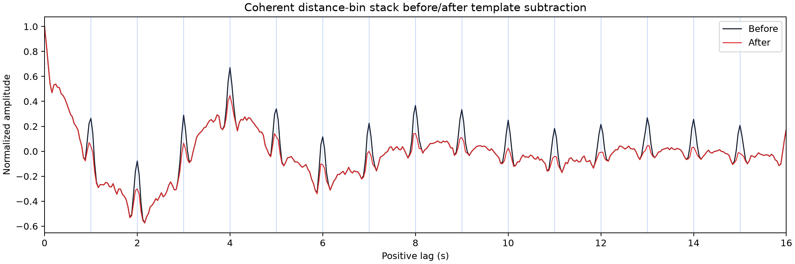
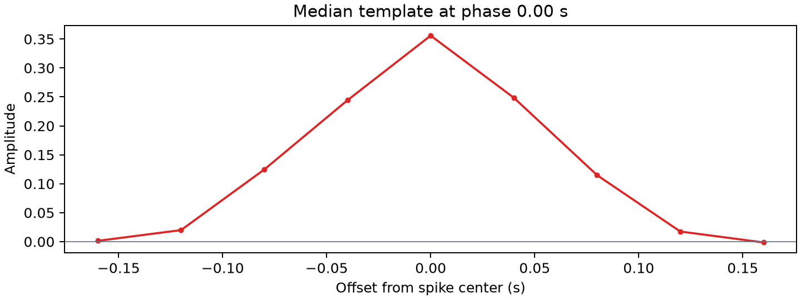
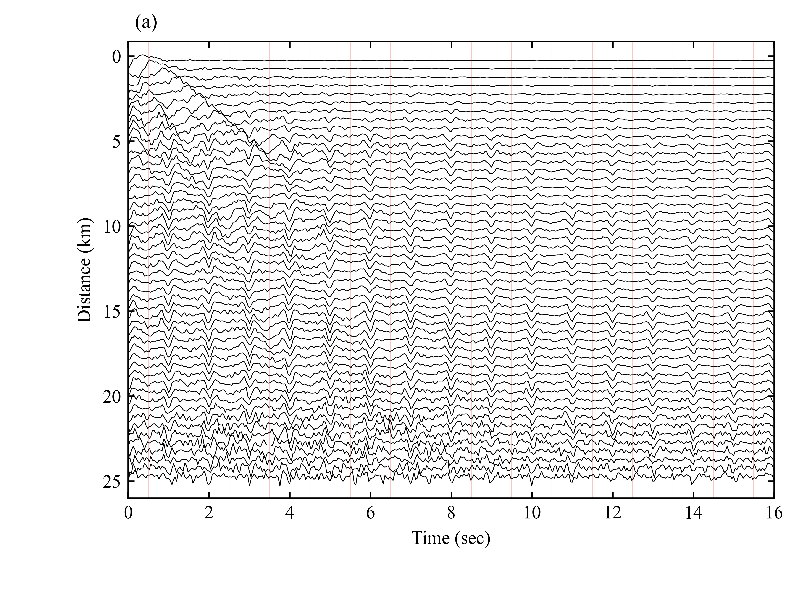
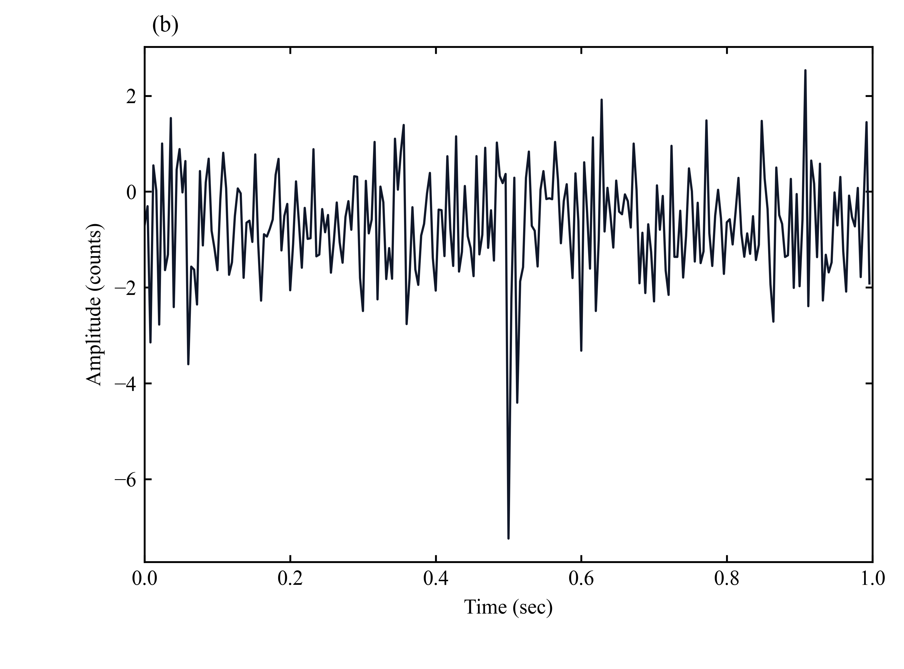
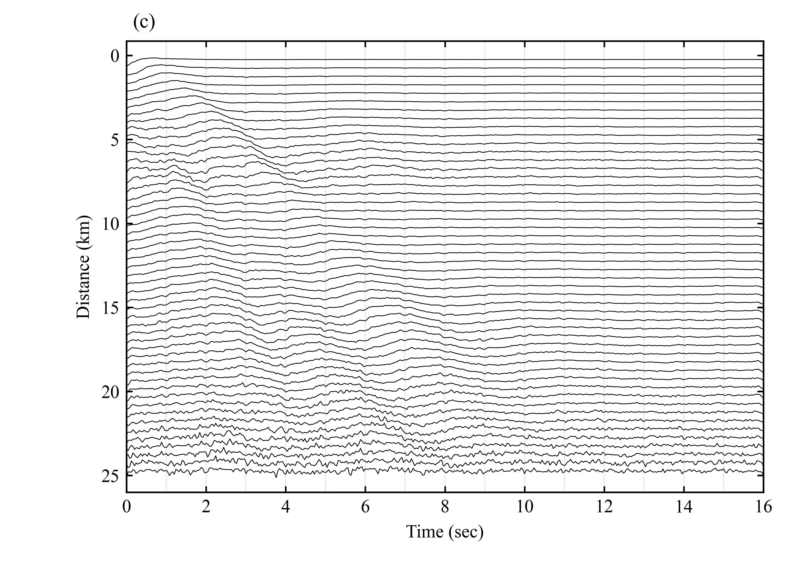
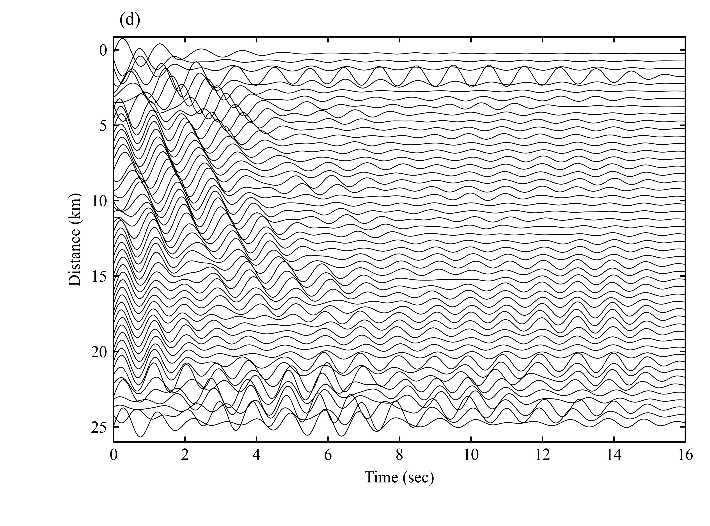

lenovo-ThinkStation-K-C3。原始 STACK 只读保留在 /mnt/data_hdd/MSH_ANT/stack/2014/1D_WANG_PWS_150s_20260620/STACK，去尖峰后的 moveout 子集副本写到 /mnt/data_hdd/MSH_ANT/parameter_tests/1d_moveout_before_after_spike_removal_20260625_fixed/stack_cleaned_subset。1D.4529。经纬度范围：minlat=46.1384, maxlat=46.1595, minlon=-122.3363, maxlon=-122.0297。/mnt/data_hdd/MSH_ANT_Final/03CC_StackData/Reports/images/moveout_before_after_data.npz；本次输出直接从 NPZ 重绘。/mnt/data_hdd/MSH_ANT_Final/03CC_StackData/Reports/images，代码副本放在 /mnt/data_hdd/MSH_ANT_Final/03CC_StackData/Reports/code。

去尖峰前：

去尖峰后：

每个台站对不是用同一个固定振幅硬减，而是先拟合模板幅度再相减。拟合系数中位数 -0.000，绝对值中位数 0.001。详细见 images/spike_scales.csv。
这张图是尖峰最明显的一版 before/after 对比图。左侧为去尖峰前，右侧为去尖峰后，用来直观看 1 s 重复尖峰是否被压下去。

这张图保留原始 coherent 叠加前后对比，可辅助判断去尖峰是否同时改变了主波形整体形态。

这是用于减除 1 s 重复尖峰的模板图。实际处理时不是用固定振幅硬减，而是每条道先拟合尺度，再减去 scale × template。

下面这些代码文件已经放在当前目录，报告里直接给出入口，后续查实现或继续改图时不需要再回主项目里找。
detect_1s_spikes_wang_style.py：负责 1 s 重复尖峰的诊断、模板构建和幅度拟合。apply_spike_removal_moveout_compare.py：负责把模板减除应用到 moveout 子集，并输出 before/after 对比图和报告。这里补充保存 Wang Figure 3 的统一四联图、4 张单图、绘图代码和 4 个对应 NPZ 数值文件，方便后续直接改图。
wang_figure3_four_panel_uniform.png

panel_a.png

panel_b.png

panel_c.png

panel_d.png

这组四联图的重绘代码和拼图代码都保存在这里，后续如果只想改版式、字号或布局，可以直接改这些脚本。
render_wang_figure3_from_npz.py：从 4 个 NPZ 数值文件直接重绘 panel A-D，并输出统一尺寸的四联图。compose_wang_figure3_panels.py：把已经生成好的 4 张单图再次拼成统一 2×2 组合图。panel_data_index.md：记录 panel A-D 对应的原始图片来源、NPZ 路径和数组键名。下面 4 个 NPZ 是对应单图的数值缓存。后续改图时优先读这些文件，不需要重新从更上游结果再推一次。
wang_figure3a_panel_data.npz：Panel A 的距离分箱诊断残差数据。subset_strict_data.npz：Panel B 的 0-1 s 波形子集数据。distance_bin_wiggle_panel_data.npz：Panel C 的去尖峰后距离分箱波形数据。wang_figure3d_bandpassed_fill_scaled_2p00_no_fill_data.npz：Panel D 的 bandpassed distance-bin 显示数据。